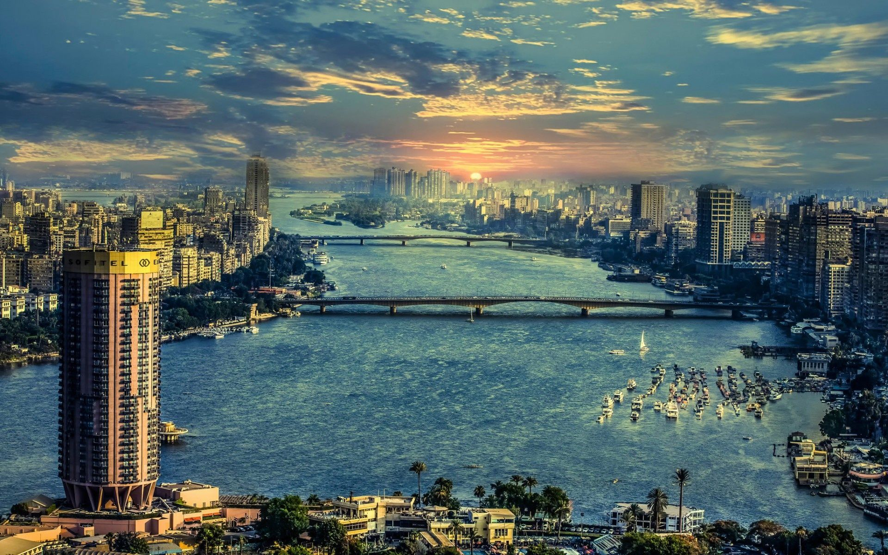

The Egyptian city of Cairo
Cairo is the capital of Egypt, and it is one of the largest cities in the Arab Republic of Egypt, with an area of four hundred square kilometers, and a population of nearly twenty million people, according to recent statistics. Arabic is the official language of the country, and Islam is the official religion. The pound is the official currency with which people deal in commercial and economic transactions in this city, like the rest of other cities in Egypt. To get some general information about Cairo quickly and illustratively to spread interest. [1] Cairo landmarks There are many landmarks in Cairo, the most important of which are: [2] Mosques: There are many mosques in the Egyptian city of Cairo, including but not limited to: Amr. Mosque. Ibn Tulun Mosque. Al-Azhar Mosque. Bridges: Cairo extends on the banks of the Nile and connects the banks to each other with a number of bridges known as bridges, including: Giza Bridge. Galaa Bridge. Zamalek Bridge. Universities: The city of Cairo pays great attention to science, education and the educated, and it has many ancient scientific edifices filled with distinguished students, including the following: Al-Azhar University. American University. Cairo University. Ain-Shams University. Tourist attractions: There are many places that can be visited and visited for entertainment, culture and other purposes, including the following: The Egyptian Museum. Khan Al-Khalily. Ancient Egypt. The Egyptian Book House. Cairo Tower. Castle Museum. Baron's Palace. - Islamic art museum. Coptic Museum. Tourism in Cairo The city of Cairo is an important tourist destination for many people coming from all over the world, due to its longevity and the monuments that exist to this day. Tourists do various activities in Cairo, they go to theaters and cinemas, and they enjoy watching the effects of different civilizations in different museums dedicated to different purposes. In Cairo's economy, as it reflects positively on various aspects of life, which leads to its revival in addition to the employment of the labor force of its citizens. It also manufactures tourism-related industries that tourists take home with them when they leave to remind them of them.
The best tourism companies in Egypt Recommendations on the site are opinions that may deviate from the truth and may be biased. But we strive to make the list in your hands the best and most useful for those looking for the best tourism companies in Egypt. We would also like to know your experiences with tourism companies in Egypt.
1# Heliopolis Tourism Umrah · Internal holidays Home vacations (01068975555) Sednawy Square, 10th of Ramadan, Sharkia
Specializing in Hajj and Umrah trips, domestic tourism to the best Egyptian tourist destinations, and organizing trips. The best among the tourism companies in Egypt.2# TravGlobe London Cape Town Holidays London Holidays Cape Town Holidays (01210661111) 63 Talaat Harb Axis, New Cairo, Cairo Best London holiday company among Egypt tour operators.
3# Sama Misr Tours Holidays on the Red Sea Nile cruises between Luxor and Aswan Red Sea holidays Nile cruises Luxor and Aswan (0224011006) Flat 15, first floor, 14 El-Obour Buildings, Salah Salem Street, Heliopolis, Cairo
4# Quartet Tours Holidays in Marsa Alam Honeymoon in Phuket Marsa Alam honeymoon vacation in Phuket (01066444144) 5 Ahmed Khalil Abdel Khaleq Street, Heliopolis, Cairo The best Marsa Alam holiday company among the tourism companies in Egypt.
5 #New Cairo Tours Holidays in Turkey · Holidays in Albania Turkey Holidays · Albania Holidays (01128000517) Villa 75, Street 39, Fourth District, First District, New Cairo, Cairo